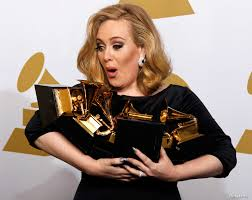

ADELE
Adele Laurie Blue Adkins MBE, is an English singer-songwriter. After graduating from the BRIT School in 2006, Adele signed a recording contract with XL Recordings. In 2007, she received the Brit Awards Critics' Choice Award and won the BBC Sound of 2008 poll. Her debut album, 19, was released in 2008.
Born: 5 May 1988 (age 32 years), Tottenham, London, United Kingdom
Spouse: Simon Konecki (m. 2016–2019)
Children: Angelo Adkins
ALBUMS:
AdeleMay 21, 1988,
Adele Song list,
All I Ask (2015),
Chasing Pavements (2008),
Cold Shoulder (2008),
Crazy For You (2008),
Daydreamer (2008),
Don't You Remember (2011),
He Won't Go (2011),
Hello (2015),
Hometown Glory (2007),
I Found A Boy (2011),
I Miss You (2015),
I'll Be Waiting (2011),
Lay Me Down (2015),
Love in The Dark (2015),
Make You Feel My Love (2008),
Melt My Heart to Stone (2008),
Million Years Ago (2015),
My Same (2008),
One and Only (2011),
Remedy (2015),
River Lea (2015),
Rolling In The Deep (2010),
Rumour Has It (2011),
Send My Love (To Your Lover) (2015),
Set Fire to the Rain (2011),
Skyfall (2012),
Someone Like You (2011),
Sweetest Devotion (2015),
Take It All (2011),
Turning Tables (2011),
Water Under the Bridge (2015),
When We Were Young (2015)

AWARDS:
Grammy Award for Album of the Year
2017, 2012
Grammy Award for Song of the Year
2017, 2012 ·
Hello, Rolling in the Deep
Grammy Award for Record of the Year
2017, 2012 ·
Hello, Rolling in the Deep
Grammy Award for Best New Artist
2009
Grammy Award for Best Pop Vocal Album
2017, 2012
Grammy Award for Best Music Video
2012 ·
Rolling in the Deep
Academy Award for Best Music (Original Song)
2013 ·
Skyfall
Grammy Award for Best Pop Solo Performance
2017, 2013, 2012 ·
Hello, Set Fire to the Rain (live), Someone Like You
Billboard Music Award for Top Female Artist
2016, 2012
Bravo Otto - Super Singer - Female
2011
Golden Globe Award for Best Original Song
2013 ·
Skyfall
Grammy Award for Best Female Pop Vocal Performance
2009 ·